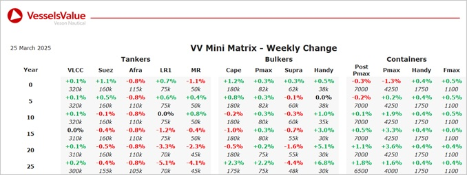

Bulkers: Bulker Values have mostly firmed this week, with older tonnage Handysizes seeing the mostsignificate increase owing to sales of vessels such as Lion and Pnoi
Capesize BC Braverus (170,200 DWT, Dec 2009, Sungdong) sold SS/DD Passed to undisclosed buyers for USD 22 mil, VV Value USD 24.63 mil
Capesize BC Maran Odyssey (171,700 DWT, Sep 2006, Daewoo) sold to Lila Global for USD 19 mil, VV Value USD 19.79 mil
Panamax BC Ivestos 1 (76,800 DWT, Jul 2004, Sasebo) sold to undisclosed buyers for USD 8.1 mil, VV Value USD 8.18mil
Supramax BC IVS Gleneagles (58,000 DWT, Mar 2016, Shin Kurushima Toyohashi) to undisclosed buyers for USD 23 mil, VV Value USD 23.14 mil
Handy BC (Open Hatch) Lion (32,300 DWT, Oct 2007, Kanda) sold to Chinese buyers for USD 10 mil, VV Value USD 8.96 mil
Handy BC (Open Hatch) Pnoi (32,300 DWT, Aug 2009, Kanda) sold to Statu Shipping for USD 11.2 mil, VV Value USD 10.22 mil
Tankers:Tanker values have remained mostly stable over the last week with some movement seen for Suezmax and MRs owing to recent deals
Suezmax Pentathlon (158,500 DWT, Aug 2009, Samsung) sold to Grace Energy Shipping for USD 40.5 mil, VV Value USD 40.7 mil
MR2 Centennial Matsuyama (47,200 DWT, Nov 2008, Shin Onomichi Dockyard) sold to undisclosed buyers for USD 16.5 mil, VV Value USD 16.93 mil
MR2 Challenge Procyon (46,000 DWT, Apr 2011, Shin Kurushima Onishi) sold to unknown Greek buyers for USD 19.8 mil, VV Value USD 19.99 mil
MR1 (Chemical/Product) Yash (37,300 DWT, May 2002, STX Offshore) sold to undisclosed buyers for USD 8.2 mil DD Due, VV Value USD 8.9 mil
Containers:Midage Panamaxes are up this week, alongside smaller New Panamax vessels, whilst ULCV NBs are nudging down
Sub Panamax Atlantic Ibis (2,007 TEU, Mar 2008, Zhejiang Shipbuilding) sold to Folk Maritime for USD 17mil, VV Value USD 17.27 mil.
